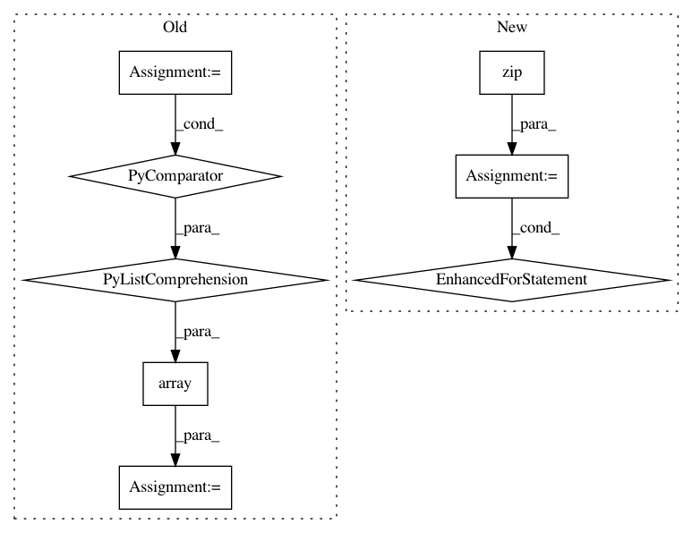

2526879b1f941c887eeb24a267b5ea010e20d5d7,PyNomaly/loop.py,LocalOutlierProbability,_ssd,#LocalOutlierProbability#Any#,137
Before Change
for cluster_id in self.cluster_labels_u:
indices = np.where(data_store[:, 0] == cluster_id)
cluster_distances = np.take(data_store[:, 1], indices)
cluster_distances_nonan = cluster_distances[np.logical_not(np.isnan(cluster_distances))]
ssd = np.sum(np.power(cluster_distances_nonan, 2))
if ssd == 0.0:
warnings.warn("Sum of square distances equals zero. Execution halted.", RuntimeWarning)
sys.exit()
ssd_dict[cluster_id] = ssd
data_store = np.hstack((data_store, np.array([[ssd_dict[x] for x in data_store[:, 0].tolist()]]).T))
return data_store
def _standard_distances(self, data_store):
return np.hstack(
After Change
indices = np.where(data_store[:, 0] == cluster_id)
cluster_distances = np.take(data_store[:, 1], indices).tolist()
ssd = np.sum(np.power(cluster_distances[0], 2), axis=1)
for i, j in zip(indices[0], ssd):
ssd_array[i] = j
data_store = np.hstack((data_store, ssd_array))
return data_store
def _standard_distances(self, data_store):
In pattern: SUPERPATTERN
Frequency: 3
Non-data size: 8
Instances
Project Name: vc1492a/PyNomaly
Commit Name: 2526879b1f941c887eeb24a267b5ea010e20d5d7
Time: 2017-12-17
Author: vc1492a@gmail.com
File Name: PyNomaly/loop.py
Class Name: LocalOutlierProbability
Method Name: _ssd
Project Name: analysiscenter/batchflow
Commit Name: eba587e7549e252036f2500e9a3b3a18a778b335
Time: 2017-11-17
Author: rhudor@gmail.com
File Name: dataset/batch_image.py
Class Name: ImagesBatch
Method Name: assemble
Project Name: scipy/scipy
Commit Name: 7d9022349787cd4e0faef55a30cab22e91e37246
Time: 2019-10-15
Author: jor@informatik.uni-kiel.de
File Name: scipy/sparse/lil.py
Class Name: lil_matrix
Method Name: tocsr